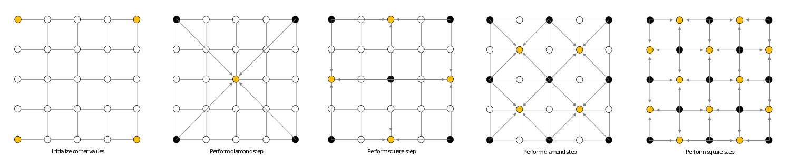

Scene from an unknown planet with a red moon and distant stars. The moon casts a strong red light over the terrain.
Using some sort of procedural displacement function, one can procedurally generate a complex model from a very simple shape. In this case, I've procedurally generated a terrain-like plane by using a simple quad and performing the diamond square algorithm. This resulted in various hills and mountains based on the level of smoothness and variation. The smoothness determines how many times the algorithm runs and variation determines the maximum displacement each time it runs.

Since the diamond square algorithm works recursively, the more the algorithm runs, the more smooth the plane gets, resulting in a flat quad again.
A Visualization of the Running Algorithm
For More Information About the Diamond-Square Algorithm
After I generated the terrain, I still had to recalculate the normals, since all the points were randomly displaced.
This can be done by looping through each vertex and use the heights of the surrounding vertices to determine the normal.
Method 1: We take the cross product of the vertical and horizontal vectors
Method 2: Form the normal vector directly, using the heights of each neighbor
Both are optimal solutions and can be done prior to ray tracing the scene.